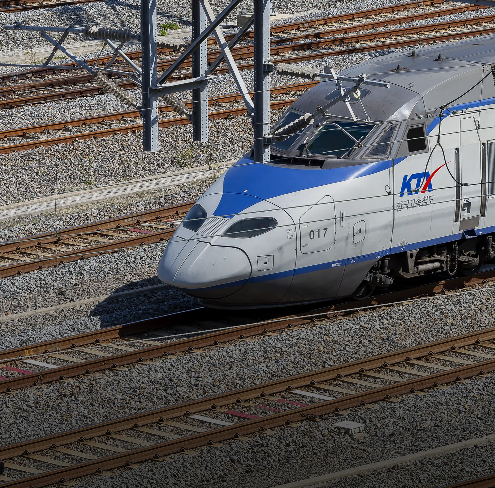

전남광주 주요 역 이용객 얼마나 늘었을까?
KTX·SRT 통합 두 달,
호남선에 생긴 일
- KTX와 SRT 고속철도 통합
- 호남선·전라선 열차 증편
- 호남선 하루 최대 4,822석
- 전라선 하루 최대 2,511석
- 목포역 이용객 21.9% 증가
기차표, 구하기 쉬워지고 있어요
지난 9월 KTX와 SRT 고속철도가 통합되면서 호남선·전라선에 열차가 늘었어요. 그 결과 9~10월 두 달간 전남광주 주요 역의 열차 이용객이 전년보다 늘었다고 하는데요. 어떤 변화가 있었는지 알아볼까요?
운행 확대
통합 후 하루 운행 횟수가
통합 후 하루 운행 횟수가
얼마나 늘었을까?
호남선은 하루 최대 4,822석, 전라선은 2,511석이 늘어났습니다.
| 노선 | 주중 | 주말 | 추가 좌석(하루 최대) |
|---|---|---|---|
| 호남선 | 95회→100회 | 96회→100회 | 4,822석 |
| 전라선 | 40회→45회 | 45회→54회 | 2,511석 |
주요 역 증편
전남광주 주요 역은
전남광주 주요 역은
몇 회 늘었을까요?
광주송정역은 6~7회, 순천역과 여수엑스포역은 7~9회 등 운행이 확대됐어요.
| 역 | 주중 | 주말 |
|---|---|---|
| 광주송정 | 89회→96회 +7회 | 90회→96회 +6회 |
| 순천·여수엑스포 | 36회→43회 +7회 | 39회→48회 +9회 |
| 목포 | +2회 | +2회 |
| 나주 | +1회 | +1회 |
이용객 증가
늘어난 열차만큼
늘어난 열차만큼
이용객도 늘었습니다
호남선에서는 호남권 최대 거점 역인 광주송정역 이용객이 6.3% 증가했어요. 목포역은 같은 기간 50만 765명이 이용해 무려 21.9% 증가율을 보이며 전남광주 역사 중 가장 높은 증가율을 기록했답니다.
| 역 이름 | 9~10월 이용객 수 | 전년 대비 증가 인원 |
|---|---|---|
| 광주송정역 | 약 160만 명 | +9만 4,903명+6.3% |
| 순천역 | 약 52만 5천 명 | +4만 8,671명+10.2% |
| 목포역 | 약 50만 명 | +8만 9,905명+21.9% |
| 여수엑스포역 | 약 26만 1천 명 | +1만 9,724명+8.1% |
| 나주역 | 약 22만 7천 명 | +8,117명+3.7% |
※ 새마을호, 무궁화호 등 일반 열차 이용객 모두 포함
이번 결과는 단순한 수치 증가를 넘어 그동안 표가 없어 발을 동동 굴렀던 시민들의 이동권이 한층 넓어졌다는 점에서 의미가 큽니다.
앞으로
여기서 끝이 아닌데요
전남광주통합특별시는 2028년 말 평택~오송 2복선화 개통과 변전소 개량 시점에 맞춰 새로 늘어나는 고속 열차 물량이 호남선과 전라선에 우선 배정될 수 있도록 적극 추진할 예정이에요.
기차표 예매가 수월해진 지금
기차를 타고 멋진 가을 여행을 떠나보면 어떨까요?